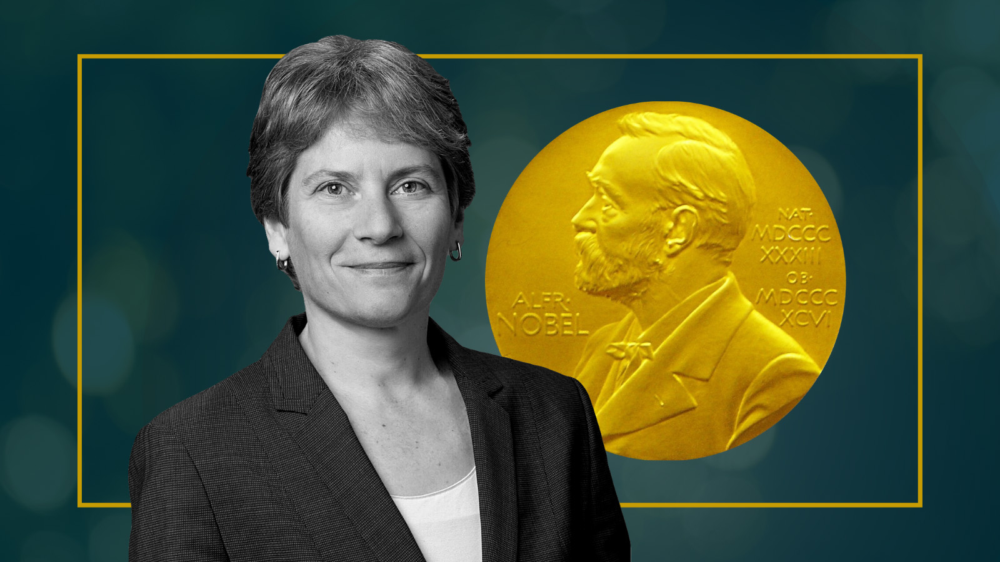
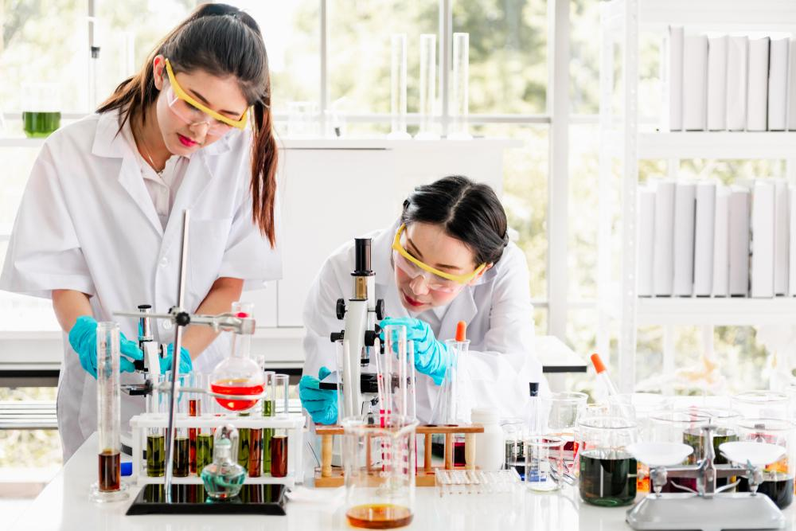

Launch Your Future as a Chemist
Mix, test, and invent new materials, medicine, and makeup!
Pathway Snapshot
High School Courses | College Majors | Career Roles |
Chemistry (Honors/AP) | Chemistry | Analytical Chemist |
Biology | Biochemistry | Medicinal Chemist |
Physics | Chemical Engineering | Environmental Chemist |
Algebra II / Pre-Calculus | Materials Science | Forensic Chemist |
Computer Science (optional) | Pharmaceutical Sciences | Quality Control Chemist |
Women Who Lead the Way
Carolyn Bertozzi

Professor of Chemistry & Nobel Laureate (Bioorthogonal Chemistry)
Photo Credit: Wikimedia Commons / Nobel Foundation
“Science is about curiosity, creativity, and the freedom to ask bold questions.”
Carolyn Bertozzi is a groundbreaking chemist whose work connects chemistry and biology to improve human health. She helped invent bioorthogonal chemistry, a revolutionary way to study chemical reactions inside living cells—advancing cancer research, drug development, and diagnostics. In 2022, she became one of the few women to win the Nobel Prize in Chemistry, showing that modern chemists can be innovators, leaders, and changemakers.
Day in the Life
Daily Tasks | Tools or Technologies Used |
Design and run experiments | Lab glassware (beakers, flasks) |
Analyze chemical samples | Spectrometers, chromatography tools |
Record and interpret data | Lab notebooks, spreadsheets |
Collaborate with scientists | Research software, data tools |
Ensure lab safety and accuracy | Safety equipment, testing protocols |
Mini-Activity: Try This!
- Kitchen Chemistry Challenge:
Mix baking soda and vinegar. - Observe the reaction
- Then ask: What gas is produced? How could changing the amounts affect the reaction?
This is the same kind of curiosity chemists use every day—just scaled up in real labs.
Careers & Resources
Explore Your Path
Degree Program Finder:
- Search universities with strong chemistry or biochemistry programs
Scholarships:
- Look for STEM scholarships for women through organizations like Women Tech Council and ACS
Summer Camps & Programs:
- Chemistry summer research programs
- Science camps
- Pre-college lab experiences
Learn More:
- O*NET Online – Chemistry Careers
- Roadtrip Nation – Science & Research Pathways
You Belong Here
If you love asking “why,” experimenting, solving puzzles, or mixing creativity with science, chemistry might be your future. You don’t have to choose between curiosity and impact—you can discover, create, and change the world, one molecule at a time.
